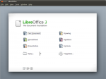

Da ich als Administrator in einem Unternehmen des Mittelstandes oftmals mit knappen Budgets zu kämpfen habe, sind Programme, die auch für den kommerziellen Gebrauch kostenlos sind eine feine Sache. Teilweise bieten diese zwar nicht die Möglichkeiten oder die Einfachheit der kommerziellen Programme, aber die braucht man oft eben auch nicht. Hier also nun eine Liste von Programmen, die kommerziell nutzbar sind.
Aufgeteilt ist das ganze nach Einsatzgebiet, da wir vor allem Windows XP nutzen, gehe ich davon aus. Nicht jedes dieser Programme habe ich getestet, weswegen ich mich über Erfahrungsberichte von Usern und Administratoren freuen würde.
Ich werde versuchen, diese Liste aktuell zu haben und neue Programme und Kategorien einzufügen, wenn mir welche einfallen oder angefragt werden.
Bildbetrachtung:
Privat bin ich ein großer Fan von Irfan View, dieses ist allerdings für den kommerziellen Gebrauch nicht kostenlos.
Als Alternative gibt es die bereits eingebaute Bild- und Faxanzeige. Wem die zu rudimentär oder zu dämlich ist, dem kann ich den Kujawiak Viewer ans Herz legen, der einen Dateiexplorer und einige wenige Bearbeitungsfunktionen bietet.
Antivirus:
Grade für Administratoren ein heikles Thema. Benutzer sind per Default doof und die Verkörperung von Murphys IT-Gesetz, was schief gehen kann, wird schief gehen. Deswegen braucht man einen verdammt guten Schutz. Leider ist der ohne Geld auszugeben kaum machbar. Ein Programm mit Administratorkonsole für einfache Übersicht ist meines Wissens für Windows gar nicht kostenlos zu bekommen, daher sind diese Alternativen wohl nur etwas für sehr kleine Firmen.
Die wohl bekannteste Open Source Antivirus Software ist Clam AV. Diese gibt es in verschiedenen Versionen bzw. Forks.
Die rudimentärste Software ist Clamwin. Allerdings hat diese Software nichtmal einen Echtzeitschutz, was sie in meinen Augen für den Tagesbetrieb disqualifiziert.
Als relativ neues Produkt bietet die Ursprungsfirma von Clam AV Immunet 3.0 powered by Clam AV an. Dieses Programm bietet einen Echtzeitschutz und kann in kleinen Firmen entsprechend eingesetzt werden.
Außerdem gibt es noch die Comodo Produkte, von denen die meisten auch für den komerziellen Einsatz kostenlos sind. Hierzu zählt eine Software-Firewall, ein Antivirusprogramm, eine Security Suite die eine Verbindung aus beiden ist und ein paar andere mehr oder weniger nützliche Sicherheitsprogramme.
Office Programme:
Wenn man echte Alternativen zu Microsofts Office Suite sucht, kommt man an dem Namen Open Office nicht vorbei, aus gutem Grund.
Open Office bietet alles, was das Büroherz begehrt: ein Textbearbeitungsprogramm, ein Kalkulationstabellenprogramm, einen Powerpointersatz, usw., usw. Die Open Office Suite steht der von Microsoft in den Kernbereichen in nichts nach, ist teilweise sogar besser. Ich empfehle allerdings die Open Office Fork Libre Office, da diese nicht mit der Firma Oracle in Verbindung steht, die mir persönlich sehr unsympathisch ist.
Grafikbearbeitung:
In der Grafikbearbeitung dominiert Adobe mit seinem sündhaft teurem Photoshop bzw. seiner Creative Suite. Diese ist allerdings oftmals total überdimensioniert, vieles kann auch mit den Alternativen auf den Bildschirm gezaubert werden.
Für wirklich simpelste Bearbeitung empfehle ich das Bilschirmcapture Tool Screenpresso. Neben tollen Screenshotd Funktionalitäten gibt es auch einige kleine Bearbeitungsmöglichkeiten. Zum Einrahmen von Details, Setzen von Kommentaren oder Ausblenden von sensiblen Daten in Bildern völlig ausreichend.
Für etwas anspruchsvollere Bildbearbeitung empfehle ich Paint.NET. Das Programm bietet Ebenenbearbeitung und einen Haufen Bildmanipulationsfunktionen. Dabei ist es sehr schnell und übersichtlich.
Als Primus in der Grafikbearbeitung gibt es dann noch GIMP. In vielen Funktionen ist es Photoshop gewachsen, ist lediglich nicht so ästhetisch und hat eine etwas kompliziertere GUI. Diese kann man mit GIMPshop noch etwas vereinfachen.
{kind=link}
{kind=link}
{kind=link}
{kind=link}
{kind=link}
{kind=link}